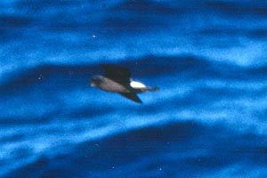
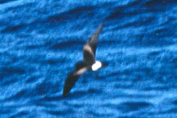
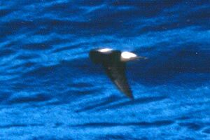

| These photographs accompany records that have been recently submitted to the committee. This record
was NOT ACCEPTED.    Wedge-rumped Storm-Petrel Ocenodroma tethys 6 September 1997, near San Miguel I., SBA 1997-137 © 1997 Ron Saldino Back to CBRC Rare Bird Photos |